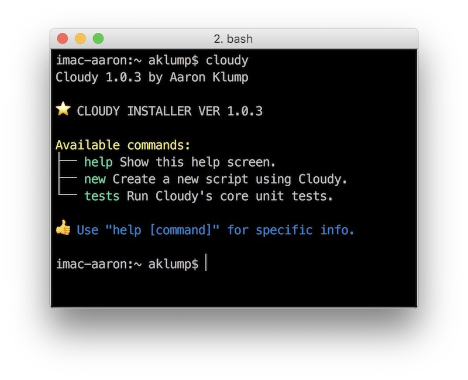

A lightweight BASH framework, which uses YAML or JSON for your script's configuration and provides a unit testing framework.
Cloudy Boosts the following features:
Visit https://aklump.github.io/cloudy for full documentation.
After installing Cloudy, to write a new script called thunder.sh ...
cd to the directory where you want the script to be created.cloudy new thunder.sh and the necessary files/directories will be created in the current directory.new type cloudy help new.cloudy new thunder.sh --json.If you find this project useful... please consider making a donation.
Installation means downloading this repository to your system. It contains cloudy_tools.sh which is used to generate new scripts, as well as the cloudy framework. It is a Cloudy script.
Here is a snippet to clone this repo to a directory on your system $HOME/opt/cloudy and create a symlink in $HOME/bin/cloudy. This assumes ~/bin is in your $PATH variable.
(cd $HOME && (test -d opt || mkdir opt) && (test -d bin || mkdir bin) && cd opt && (test -d cloudy || git clone https://github.com/aklump/cloudy.git) && (test -s $HOME/bin/cloudy || ln -s $HOME/opt/cloudy/cloudy_installer.sh $HOME/bin/cloudy)) && cloudy
On success you should see something resembling the following:

Beyond the internal variables the following variables are made available by Cloudy.
| varname | description |
|---|---|
$ROOT |
The directory containing your script. |
$SCRIPT |
Absolute path to your script. |
$CONFIG |
Absolute path to the base config file. |
$WDIR |
The working directory when script was initiated. |
$LOGFILE |
Absolute path to a log file, if enabled. |
echo $BASH_VERSION